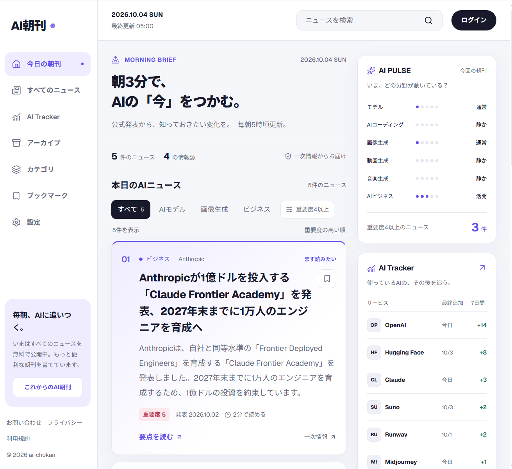

有料noteを読む前に、同じアプリを作った
noteで、いつきさんの「AI朝刊」という記事を見つけました。AIニュースを毎朝3分で読めるようにしたWebアプリを、バイブコーディングで作ったという話です。記事の後半は有料で、開発中につまずいた点が書かれています。
私はその有料部分を読む前に、同じようなアプリを自分で作ることにしました。これまでの記事で「ニュース要約アプリ」と書いてきたのが、このアプリです。(関連記事:Claudeの月額プランがあるのに、なぜAPIは別料金？文系営業が$5で試した、文系営業が、AIで秘書を作ってみた)
このとき私は、いつきさんのアプリの完成形をあえて見ないまま開発を進めました。先に画面を見てしまうと、それをなぞって作ることになるからです。確かめたかったのは、初心者がどこでつまずくのか、先駆者と同じ壁にぶつかるのか、という点でした。
10月2日、アプリが一通り動くようになったところで有料部分を買い、答え合わせをしました。有料部分の7つの見出しに対して、私の予想が当たったのは2つ、Claudeの予想は3つでした。技術寄りの見出しはClaudeの読みが鋭く、私が当てたのは「使ってみたときの違和感」に関する2つです。有料部分の中身は、ぜひ元の記事で読んでください。
そして今朝、初めていつきさんのAI朝刊の画面そのものを開いてみました。文章では分からなかった違いがいくつも見えてきたので、今回はその話です。
そもそも、アプリの入口がちがう
画面を比べる前に、前提をひとつ。同じ「AI朝刊」でも、いつきさんと私では、作り始めた入口がまったく違います。
| 項目 | いつきさん | 私 |
|---|---|---|
| 作った目的 | サービスとして公開(将来の有料化も想定) | 自分が毎朝確認するため |
| 読む人 | AIニュースを追いたい多くの人 | 自分ひとり |
| 進め方 | 作りながら壁を越え、その記録を有料noteに | 完成形と有料部分をあえて見ずに、同じ壁にぶつかるか確かめながら |
| 行き着いた方向 | 公開サービスとしての磨き込み | AI秘書 |
自分専用として作るうちに、私の版は「AI秘書」という方向にたどり着きました。この話は後半で書きます。
いつきさんのAI朝刊には、何が載っていたか

画面は大きく3つに分かれていました。
- 左のメニュー:今日の朝刊、すべてのニュース、AI Tracker、アーカイブ、カテゴリ、ブックマーク、設定
- 中央の朝刊:「5件のニュース」「4の情報源」という件数表示、分野ごとの絞り込みタブ、重要度順に並んだ記事カード。カードには重要度、発表日、読むのにかかる時間が付いています
- 右の欄:分野ごとに「静か/通常/活発」を表示する「AI PULSE」と、サービスごとの最終追加日と過去7日間の件数を並べた「AI Tracker」
最終更新は朝5時。今朝の1件目はAnthropicの発表で、重要度は最高の5でした。
入口がちがうのに、骨格はほぼ同じだった
まず驚いたのは、入口がまったく違うのに、仕組みの骨格がほとんど同じだったことです。私が作る前に書いた設計メモと並べると、こうなります。
| 項目 | いつきさんのAI朝刊 | 自分版 |
|---|---|---|
| コンセプト | 朝3分でAIの「今」をつかむ | 同じ(無料部分から借りた) |
| 更新時刻 | 毎朝5時ごろ | 4時台に収集、5時台に要約、6時に読む |
| 1日の件数 | 今朝は5件 | 最大6件 |
| 並び順 | 重要度の高い順 | 重要度順 |
| 情報の出どころ | 公式発表などの一次情報 | 公式RSSと更新履歴 |
| Tracker | 最終追加日、7日間の件数 | 最終更新日、7日・30日の件数、前週比 |
件数の上限を6件にしたのは、「3分で読める字数」から逆算した結果でした。いつきさんの朝刊が今朝5件だったのを見て、計算の方向は合っていたと思えました。
文章では分からなかった違い、3つ
一方で、画面を見て初めて気づいた違いが3つありました。
1. 「AI PULSE」という分野ごとの温度計
モデル、AIコーディング、画像生成、動画生成、音楽生成、AIビジネスの6分野について、「静か/通常/活発」を点の数で見せる欄です。今朝はAIビジネスだけが「活発」でした。
記事を1本も読まなくても、「今日はどこが動いているか」が一目で分かります。仕組みとしては、今日の記事を分野ごとに数えるだけで作れそうです。手間の割に効果が大きい、うまい工夫だと感じました。
2. 記事ごとの「添え書き」
記事カードには、重要度のほかに「2分で読める」という読む時間と、「まず読みたい」というラベルが付いていました。
重要度とは別に「まず読みたい」があるのがポイントだと思います。点数だけでなく、編集者が一言添えている感じです。営業資料でいえば、お客さんに渡す資料に「ここだけは読んでください」と付箋を貼るのに近いです。
3. 見出しが日本語
いつきさんの版は見出しも日本語に訳されています。私の版は、英語の勉強も兼ねて原題のままにしています。
パッと読めるのは、やはり日本語です。ただ、これはどちらが正しいというより、目的の違いです。多くの人に読んでもらうなら日本語、自分の英語学習も兼ねるなら英語、という選び方になります。
入口がちがえば、伸ばす方向もちがう
いつきさんのAI朝刊には、ログイン、検索、カテゴリ、ブックマークがそろっていました。左下には「いまはすべてのニュースを無料で公開中」とあり、多くの人が使うサービスとして磨き込まれています。正直に言うと、見た目の完成度はいつきさんのほうが明らかに上です。
一方、私の版は自分ひとりが朝に確認するためのものです。だからこそ、次のように自分に合わせて育てられました。
- 要約の読者を「文系のB2B営業で、バイブコーディングを勉強中の自分」に絞る
- 自作のキャラクター「Lady Claudia」が、朝刊の最上部で前口上を述べる
- Notionのタスク管理から「今日のタスク」を読み込んで表示する
- 毎朝LINEに通知が届く
こうして足していった結果、私の朝刊は「ニュースを読むアプリ」から「朝いちばんに報告してくれるAI秘書」へと方向が変わってきました。サービスとして作っていたら、この方向にはたどり着かなかったと思います。
自分版に取り入れたいこと
見た目をまねするより、発想をまねしたいと思いました。候補はこの3つです。
- AI PULSEのような「分野ごとの動き」欄。今日の記事を分野別に数えて、静か/活発を出す
- 記事ごとに「何分で読めるか」を表示する
- 次に作る予定の「役に立った/いまいち」ボタンと組み合わせて、「自分にとって今週動いた分野」を出す
3つ目は、自分専用だからこそできる形です。いつきさんの「みんなにとって今日動いた分野」に対して、「自分が反応した分野」を見せられれば、同じ発想でも別の価値になります。
逆に、見出しの日本語化はまだしません。英語の原題に慣れることも、この朝刊の目的のひとつだからです。
おわりに:文章の答え合わせと、画面の答え合わせは別物
10月2日の答え合わせでは、「どこでつまずくか」の予想と記事の答えを文章で比べました。今回、画面を見て分かったのは、文章で読む答えと、実物を見て分かる答えは別物だということです。
営業でいえば、提案書を読み込むことと、お客さんの現場を見に行くことの違いに近いと思います。資料だけでは、現場の人がどこを見て、何に助けられているかまでは分かりません。
完成形をあえて見ずに作ったことにも、意味があったと思います。先に画面を見ていたら、それをなぞって作り、先駆者と同じ壁にぶつかるかを確かめられませんでした。AI秘書という方向も、きっと出てこなかったでしょう。
開発の途中、私はAIを使った開発での自分の役割を「画面と言葉の審査員」とメモしていました。答え合わせで読んだ記事の結論も、ほぼ同じところにありました。審査するには、比べる基準が要ります。いつきさんの画面は、私にとってその基準のひとつになりました。
元になった記事:AIニュースを追うのに疲れて、バイブコーディングで「AI朝刊」というサービスを作ったが、“完成してから”が一番大変だった件(いつきさん、2026年9月2日)